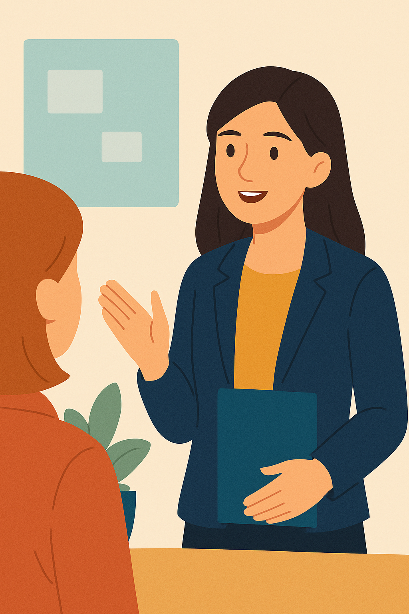

Unit1: Your First Day at Work - Session 3
3.1. Speaking Lesson
Unit 1, Session 3 – Speaking Lesson: Talking About Yourself in a Professional and Personal Way
🗣️ Speaking Lesson – Talking About Yourself in a Professional and Personal Way
Building on Session 3’s focus on writing and grammar, this Speaking Lesson prepares you for Unit 1’s language biography and professional self-introduction tasks. You’ll develop skills to record clear, confident audio at home, essential for workplace communication in fields like social integration or logistics.
🧠Objective
This lesson will help you prepare for two speaking tasks:
- A language biography, where you talk about your experience learning English and other languages.
- A professional self-introduction, where you present yourself in a formal or workplace setting.
You will learn to:
- Organise your ideas clearly
- Use useful vocabulary and expressions from Sessions 1–3
- Combine verb tenses (Past, Present, Present Perfect)
- Speak naturally and confidently
🔧 1. Structure Your Speaking: Clear, Short Paragraphs
Both speaking tasks should be short (about 1 minute), and follow a simple 3-part structure:
| Section | Language Biography | Professional Introduction |
|---|---|---|
| 1 | When and how you started learning English | Who you are, where you work/study |
| 2 | Challenges, experiences, achievements | Experience, current job/studies, skills |
| 3 | Current habits and future goals | Motivation, goals, something personal |
💡 Tip: Practise each part separately, then join them with connectors like “then”, “after that”, “now”, “so far”, “in the future…”
ğŸ› ï¸ 2. Key Language: Verb Tenses You Need
You need to combine these verb tenses naturally:
- Present Simple – facts, routines, habits
I study English every day.
I work as a technician in a school. - Past Simple – specific past events
I started learning English at school.
Last year, I took a training course. - Present Perfect – experience and connection to the present
I’ve studied English for 5 years.
I’ve worked in logistics since 2021.
✔️ Practise mixing tenses in short stories:
I studied in vocational school, and since then I’ve worked in this field.
💬 3. Vocabulary Toolbox
Useful Verbs for Language Biographies
- start, learn, study, use, practise, speak, improve, enjoy, struggle with, forget, remember, understand
Useful Verbs for Professional Introductions
- work, study, train, help, organise, support, develop, lead, communicate, prepare, collaborate
Time Expressions
- since, for, recently, last year, at the moment, when I was younger, in the future
Feelings and Opinions
- I was nervous / excited / confused / proud
- I feel confident / motivated / curious
- English is important for my job / studies / travel
🗣️ 4. Speaking Naturally and Professionally
- ✔️ Use contractions: I’ve studied, I’m working, I’d like to
- ✔️ Avoid slang: Say “I was nervous†not “I was freaked out”
- ✔️ Sound positive: Use polite, friendly tone
- ✔️ Pause briefly between ideas: Don’t speak too fast!
🯠5. Practice Plan
Practice Step-by-Step:
- Write 3 short bullet points for each part (beginning–middle–end)
- Practise speaking them aloud
- Record a short version (1 min)
- Listen to your recording – check:
- Do you speak clearly?
- Do you switch tenses correctly?
- Do you sound natural and organised?
🎙️ 6. Improving Pronunciation, Fluency, and Intonation at Home
To sound clear and natural in your recordings, practice these strategies at home:
Pronunciation
- Focus on word stress: Practice words like “inTEResting†or “comPUter†by emphasizing the correct syllable. Record and compare with native speakers on YouGlish.
- Work on final consonants: Don’t drop sounds in words like “worked†or “helped”. Say them slowly, then speed up.
- Shadow short sentences: Listen to a sentence from BBC Learning English, pause, and repeat, mimicking pronunciation.
Fluency
- Use natural fillers: Practice phrases like “Well, let me think…†or “I guess…†to avoid long pauses.
- Rehearse with bullet points: Speak from notes, not memorized text, to sound spontaneous.
- Record daily: Record a 30-second answer to “What did you do today?†to build smooth delivery.
Intonation
- Vary your pitch: Raise your voice slightly for important words (e.g., “I’m REALLY motivated”). Listen to course videos to copy patterns.
- Practice questions: Say “Why is English important?†with a rising tone at the end. Record and check.
- Smile while speaking: It lifts your tone, making you sound friendly.
Resources
- YouGlish: Hear native speakers pronounce words/phrases.
- BBC Learning English: Use videos for shadowing and intonation practice.
- ELSA Speak: Get pronunciation feedback (free version).
- YouTube: Slow playback to 0.75x to study rhythm.
💡 Tip: Spend 5 minutes daily on one strategy (e.g., shadowing) to see quick improvement.
💠Reflect
What do people need to know about your language journey or your job? What makes your experience unique or interesting? How can you use your English to make a good first impression?
Your voice tells a unique story — practice these skills to share it confidently!
✨ Use your voice to connect! Every time you talk about yourself, you build confidence for real-life situations.
Licensed under the Creative Commons Attribution Share Alike License 4.0